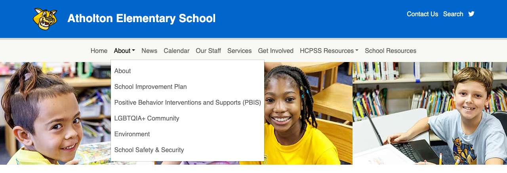
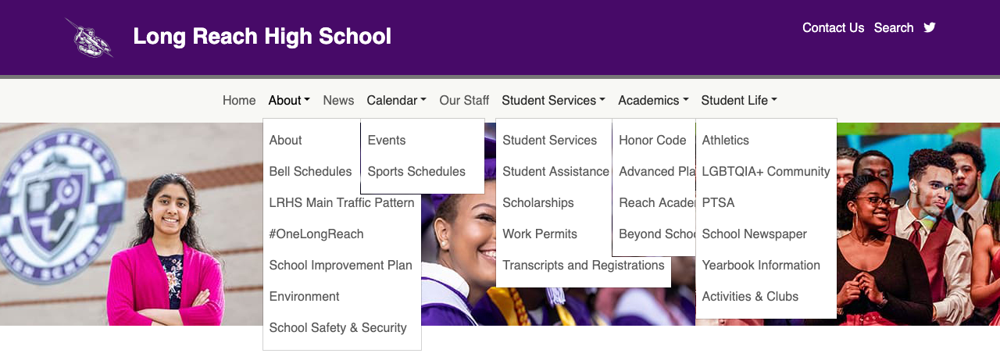
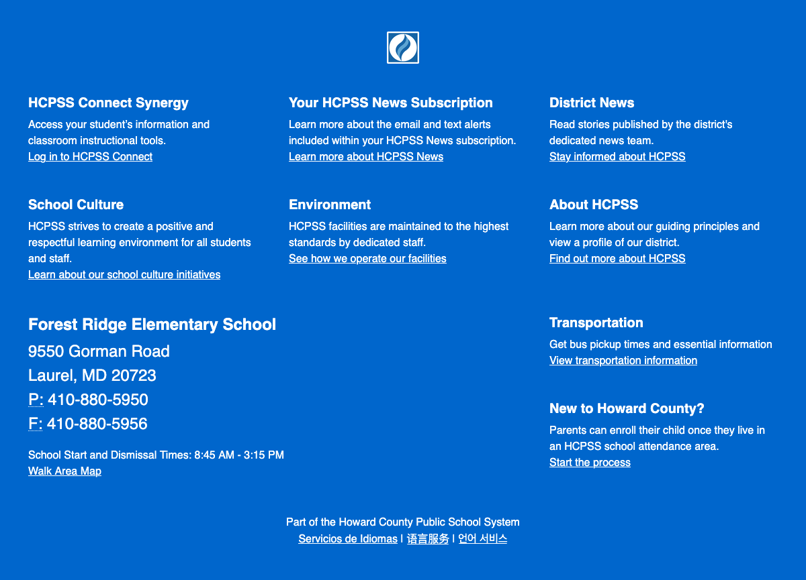
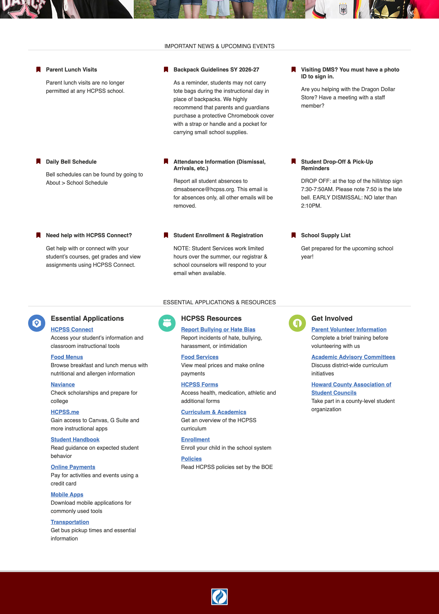

A Tour of Your School's Website#
Main Menu#


The top level items in the menu are set by the Communications team, but do differ slightly between Elementary/Middle and High schools.
The children of the top level items can be changed, but we make an effort to maintain consistency.
There are 4 types of items in the menu:
- Pages that you can edit directly
- Pages that are a dynamic view of content
- Pages that are managed centrally and cannot be edited
- Links to external resources
Below are typical menu items. Your school make not have all of these and it may have some that are not listed here.
Elementary/Middle Menu:
- Home Read more about the homepage below.
- About
- About You should update this page at least once a year to make sure the information is up to date. This an Advanced Page, read more about Advanced Pages.
- School Improvement Plan You should update this page whenever you get a new SIP.
- Positive Behavior Interventions and Supports (PBIS) You should update this page whenever you get a new PBIS.
- LGBTQIA+ Community This page has some content on it that is set by the Multimedia Communications team to be consistent across all school sites, however you can add additional information. This an Advanced Page, read more about Advanced Pages.
- Environment This page content is set by the Multimedia Communications team to be consistent across all school sites.
- School Safety & Security This page content is set by the Multimedia Communications team to be consistent across all school sites.
- News This is a list of your News messages, most recent first. So it is nor directly editable. Read more about News messages.
- Calendar The calendar contains your events. Read more about events.
- Our Staff You should update this at the beginning of the year. More information about the staff list.
- Services This page contains information about school services such as meals, FARMs, before and after care, etc. It also contains legally mandated information about Accident and Medical insurance that you cannot edit or remove. But the page is otherwise and editable Advanced Page read more about Advanced Pages.
- Get Involved A good place to put information about volunteering and PTA. This an Advanced Page, read more about Advanced Pages.
- HCPSS Resources All items under here link to HCPSS resources outside of your site. This is managed by the Multimedia Communications team and is consistent across all sites.
- School Resources A good place to put information about academic and other resources. This an Advanced Page, read more about Advanced Pages.
High School Menu:
- Home Read more about the homepage below.
- About
- About You should update this page at least once a year to make sure the information is up to date. This an Advanced Page, read more about Advanced Pages.
- School Improvement Plan You should update this page whenever you get a new SIP.
- News This is a list of your News messages, most recent first. So it is nor directly editable. Read more about News messages.
- Calendar The calendar contains your events. Read more about events.
- Our Staff You should update this at the beginning of the year. More information about the staff list.
- Student Services This page contains information about counseling, registration and academic resources. This is an Advanced Page read more about Advanced Pages.
- Academics
- Honor Societies A list of your Honor Societies. Read more about honor societies.
- Graduating Classes A list of your Graduating Classes. Read more about graduating classes.
- Student Life
- Activities & Clubs A list of your Clubs. Read more about clubs.
- Athletic Teams A list of your Athletic Teams. Read more about athletic teams.
- LGBTQIA+ Community This page has some content on it that is set by the Multimedia Communications team to be consistent across all school sites, however you can add additional information. This an Advanced Page, read more about Advanced Pages.
Banner#
The banner is made up of 3 images and they should give visitors an idea of what your school is all about: students.
If you want to change these photos, contact webmaster@hcpss.org. If you do not already have new photos, submit a multimedia request to schedule a visit from the photographer or to review other possible existing photos.
Footer#
Your site footer contains your school address, hours, phone/fax numbers and walk area map. The Multimedia Communications Team is responsible for keeping this information up to date.

Homepage#
The homepage is important for giving people the most important and relevant information. It is made up of 2 parts:
- Important News & Upcoming Events
- Essential Applications and Resources

Important News & Upcoming Events#
The Homepage Highlights are where you can highlight the most important information for visitors to your site.
Essential Applications and Resources#
This section let people know about HCPSS applications and resources as well as how they can get involved with your school. Contact webmaster@hcpss.org to make updates to this section.